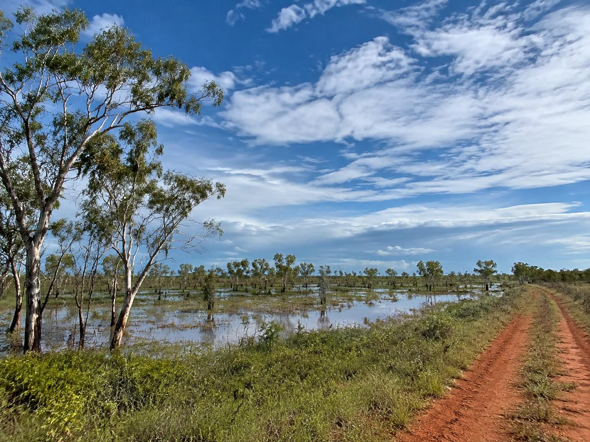
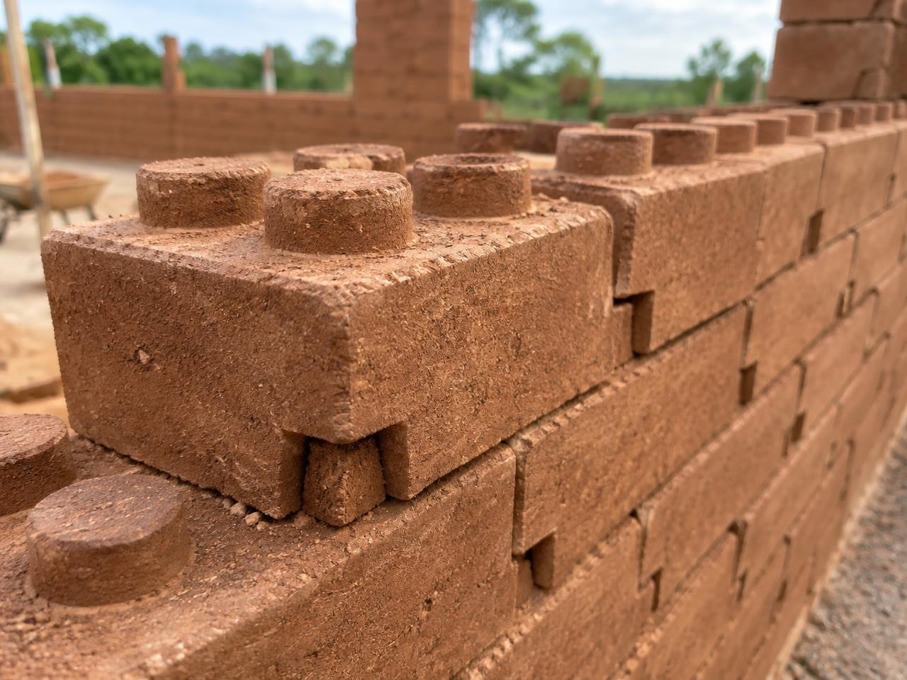

Seasonal Flooding
- Lower Camp is low-lying.
- Floodwater can reach waist height during the wet season.
- Raised and flood-resilient housing is important.
AT3 · Design Area 5 · Opportunity 5.6
A proposed housing approach for Yintjingga (Port Stewart): homes that can cope with cyclones and wet-season floods, and that Lama Lama families can build and repair locally.
Illustrative image of a north Queensland coastal landscape.
We would like to begin by acknowledging the Traditional Owners of the land on which we meet today, acknowledging the Yirrganydji people who worked with Engineers Without Borders to develop the challenge students complete in this subject.
We pay our respects to the Elders past, present, and emerging, acknowledging them as the traditional custodians of knowledge for their lands.
01 · Community & Context
Housing resilience is connected to safety, health, community independence and the ability to remain on Country. The Lama Lama community holds deep knowledge of Country, and its Rangers combine traditional knowledge with climate science - that knowledge and capability must shape any appropriate solution.

02 · The Problem
Cyclone damage and seasonal flooding create serious housing challenges, particularly in remote communities where construction materials, specialist trades and repairs are difficult and expensive to access.
How might we…
“How might we create homes that stay safe in cyclones and floods, and that the community can build and repair themselves?”
03 · Design Criteria
These five criteria come from the needs statement above and from what matters on Lama Lama Country: staying safe through the wet season, and not waiting weeks for outside trades when something breaks.
C1
The house must cope with high winds through a continuous load path - roof, walls, openings and footings working together - and align with applicable Australian housing wind requirements.
Why it matters: Cyclone damage is a direct risk to life and to whether families can stay on Country after a severe storm.
C2
Floor levels, drainage and water-resistant detailing should keep living spaces usable when Lower Camp floods, including waist-height water in a bad wet season.
Why it matters: Seasonal inundation is already part of life at Yintjingga; a “strong” house that sits in floodwater is still a failed house.
C3
Community members should be able to construct and fix the home with training and tools kept on site, without depending on specialist trades flown or driven in for every job.
Why it matters: Remoteness means outside labour is slow and expensive. Kin networks already lead recovery when formal help lags - the design should support that reality.
C4
As much of the structure as practical should use materials that can be sourced or produced near Yintjingga, after testing confirms they are suitable.
Why it matters: Every pallet shipped north adds cost and delay. Using Country’s own soil (where suitable) cuts that dependency and keeps skills local.
C5
Up-front cost, insurance pressure and ongoing upkeep should sit within a realistic community budget, and the layout should allow rooms to be added later without starting from scratch.
Why it matters: Overcrowding means one damaged home hits several families. Homes that can grow with need reduce that pressure over time.
04 · Design Options
We shortlisted three distinct ways to answer the same problem. None of these is “wrong” in every setting - the question is which one fits remote Lama Lama conditions against our criteria.
Option 1
Factory-built or kit packages delivered as modules or panels, with engineered cyclone detailing already designed in.
Adapted from common remote-housing delivery models used across northern Australia.
Option 2
A conventional framed house on raised footings: low hip or similar roof, tie-downs, wind-rated openings, and water-aware cladding.
Based on cyclone-rated timber housing practice (e.g. continuous load path and opening protection) adapted to Lower Camp flood levels.
Option 3 · Selected
Walls from interlocking blocks pressed on site from tested local soil and a small cement content, with a separate engineered roof, tie-downs and raised footings for wind and flood.
Adapted from interlocking stabilised soil block (ISSB) practice used in other contexts, reworked for Cape York cyclone and flood conditions.
Shipping-container housing was screened out early: heat build-up and corrosion in salty coastal air make it a poor fit here, even before cost and cultural fit are considered.
05 · Design Selection
Each option was scored 1 (poor fit) to 5 (strong fit) against the five criteria. Scores are group judgements from our AT2 work, not laboratory results. Where Option 3 scores lower on cyclone safety, that is deliberate: the bricks alone are not a cyclone system - the roof, ties and engineering still have to do that work.
| Criterion | Option 1 Kit / transportable |
Option 2 Raised timber-frame |
Option 3 Interlocking soil brick |
|---|---|---|---|
| C1 Cyclone safety | 5 | 4 | 3 |
| C2 Flood resilience | 4 | 4 | 4 |
| C3 Local build and repair | 1 | 2 | 5 |
| C4 Local materials | 1 | 2 | 5 |
| C5 Affordable and expandable | 2 | 3 | 5 |
| Total | 13 | 15 | 22 |
Option 1 wins on paper for wind engineering, but loses hard on the remote-repair problem that sits inside our how-might-we statement. Option 2 is the middle path: workable flood detailing, still tied to skilled framing and imported timber risk. Option 3 trails on proven cyclone performance as a wall system alone, but leads wherever community control, soil and expandability matter.
We selected Option 3 - interlocking soil-cement brick homes as the concept to develop. The rest of this website details how the blocks are made, how the house system has to be engineered around them, what a prototype would look like, and what still needs testing with Yintjingga Aboriginal Corporation before anything is built on Country.
06 · Detailed Design
A locally buildable housing approach designed to combine resilient construction, accessible materials and community-led maintenance.
Proposed design concept - not a completed installation on Lama Lama Country.

07 · How It Works
Assess local soil to determine its suitability for making interlocking blocks.
Prepare a suitable soil-and-cement mixture.
Use a hand-operated lever press and mould to shape the blocks.
Allow the pressed blocks to cure appropriately before construction.
Stack the blocks and construct the house using an appropriate structural design, cyclone protection and flood-resilient foundations.
Pushing down on the long lever rotates it around the pivot. This multiplies the user's force and drives the ram downward, so the steel plate compresses the soil mix inside the mould into a dense block.
08 · Design & Engineering
Help reduce floodwater exposure.
A proposed roof shape to help manage wind exposure.
Connect roof, walls and foundations to create a continuous structural load path.
Contributes to structural stability when properly designed.
Help protect openings during severe weather.
Materials and detailing that reduce water damage and deterioration.
Considerations that address local environmental and maintenance challenges.
Interlocking bricks alone do not make a house cyclone-proof. The complete structure must be engineered, tested and compliant with applicable Australian building requirements.
09 · Prototype
Prototype A
Demonstrates how blocks could be manufactured locally without relying on a kiln-fired brick process. See the press diagram above.
Prototype B
Conceptual illustration - not to scale.
Prototype guide
Our prototype explores how interlocking soil-cement blocks could be made on Country, using locally available soil and a manually operated brick press. Each block is formed by compressing a damp mixture of screened soil, a small amount of cement and water inside a steel mould. The raised studs and matching slots help each block sit in line with its neighbours.
Please note: This is a proposed prototype. It requires soil testing and engineering validation and is not a proven cyclone-proof building system.
Step 1
Soil is a mixture of particles of different sizes. Its behaviour when pressed and stabilised depends on the proportions of each component:
The ideal grading depends on the soil source, stabiliser, press, block geometry and intended application. We have not set a sand-to-clay ratio, because that can only be established through testing.
“Local soil must be assessed and tested before it can be selected for block production. Appearance alone cannot establish whether soil is suitable for structural construction.”
Step 2
Simple field observations - such as feeling the texture or seeing how a jar of soil and water settles - can help screen candidate soils, but they cannot replace laboratory testing. No soil source has been tested yet
Step 3
General principle Consistent preparation matters because each block in a wall should behave similarly. If one batch contains more clay, lumps or moisture than another, the blocks may differ in density, size and strength - making quality harder to control.
Step 4
To be established by testing The cement content and moisture level must be determined through trial mixes and testing. We do not prescribe a cement percentage, water quantity or fixed recipe.
Why it matters: too much water can make the mix slump or stick in the mould and weaken the pressed block; too little prevents proper compaction. An unsuitable soil-stabiliser combination may bind poorly, leading to crumbling, cracking or poor water resistance.
Step 5
This builds on the press concept from our presentation. The press works as a lever: a person applies a modest force at the end of a long arm, and because the arm rotates about a pivot close to the load, a much larger force is delivered to the ram. Lever principle
Our presentation
Demonstrates the working principle: lever, pivot, ram, plate and mould. Used to explain how blocks could be pressed locally without a kiln.
Further work
Would need designed dimensions, material selection, safety guards, a verified pressing force and an ejection mechanism, plus evaluation of output and durability. These are not specified here.
Step 6
The raised studs on the top of one block fit into the matching slots underneath the block above. This helps blocks self-align during laying, keeps courses straight and level, and resists blocks sliding sideways relative to each other while the wall is being built.
Interlocking geometry assists alignment, but it does not replace appropriate reinforcement, bond beams, tie-downs or other engineered structural connections.
Step 7
General principle Cement needs water to hydrate and gain strength. If a fresh block dries too quickly - likely in Cape York's heat and wind - it may not develop its potential strength and may crack.
There is no single correct curing duration. The appropriate time depends on the mixture, local conditions and a validated production procedure. To be validated
Step 8
Cured prototype blocks should be assessed for:
“A block that looks strong is not automatically suitable for structural housing. Appropriate testing and engineering approval are necessary before the blocks can be used in a building.”
Step 9
The house's performance depends on the entire engineered system - footings, walls, reinforcement, connections, roof and openings working together - not just the bricks. The proposed house has not been proven to withstand cyclones or floods.
Step 10
Prototype conclusion
This prototype demonstrates a potential method for locally producing interlocking soil-cement blocks on Lama Lama Country. Further soil testing, block testing, engineering design and genuine community consultation are required before it could be used for practical housing.
10 · Implementation
Implementation would require collaboration with the Lama Lama community, the Yintjingga Aboriginal Corporation and relevant technical professionals. The design has not been approved by either.
11 · Preliminary Cost Estimate
All figures are indicative estimates in Australian dollars (AUD), not supplier quotations.
| Item | Estimated cost |
|---|---|
| Locally fabricated hand press and mould | $250 |
| Cement | $595 |
| Reinforcement | $361 |
| Cyclone tie-downs | $147 |
| Soil and block testing | $350 |
| Community training (combined with prototype build) | $300 |
| Reusable curing covers and small tools | $120 |
| Subtotal | $2,123 |
| 10% contingency (rounded) | $212 |
| Total estimated package cost | $2,335 |
Scope: This is a preliminary budget for a prototype interlocking-block and cyclone-resilience package, not the total cost of a finished house. It excludes the full roof, raised foundation/footings, doors and windows, plumbing, electrical work, freight, permits, engineering fees and full construction labour. Prices must be checked with local suppliers and technical partners before implementation.
Cost Resources and Saving Strategies
Use locally available soil and water only after testing confirms they are suitable. This may reduce material transport costs.
Explore a simple hand-operated press and reusable mould fabricated locally instead of purchasing powered machinery.
Combine training with prototype construction, reuse suitable curing covers and tools, and retain moulds for future repairs.
Safety must not be reduced to save money. Cement content, reinforcement, cyclone tie-downs, foundations and roof connections must be confirmed by testing and qualified engineering advice. The lower figures above are cost-saving targets to investigate, not confirmed prices or an approved building design.
12 · Recommendations
Our concept is a starting point. These steps would need to happen, in order, before anything is built on Country.
R1
Present the concept to the Yintjingga Aboriginal Corporation and only proceed with community support (Yintjingga Aboriginal Corporation, n.d.).
Links to: C3
R2
Lab-test local soil, run trial mixes, then test cured blocks for strength and water resistance.
Links to: C1, C4
R3
A structural engineer designs the footings, reinforcement, tie-downs and roof to AS 4055 (Standards Australia, 2021).
Links to: C1
R4
Build a small raised structure, such as a ranger shed, and monitor it through one wet season.
Links to: C2
R5
Train community members in pressing, laying and repairs, and keep the tools on Country.
Links to: C3
R6
Estimate a complete home, including freight and fit-out, before seeking funding.
Links to: C5
13 · Why This Solution?
Designed to incorporate cyclone protection and flood-conscious foundations.
Uses suitable locally available soil, subject to testing, with a small amount of cement.
Aims to support local construction, repair skills and reduced reliance on outside trades.
Interlocking modular blocks can support repair and future expansion when the overall design allows.
Explores a construction approach that avoids kiln firing for the blocks and uses local resources where appropriate.
Lama Lama families need housing that responds to cyclones, seasonal floods and the challenges of remote construction. Our proposed interlocking soil brick design explores how local materials, practical construction methods and community-led maintenance can contribute to safer, more adaptable homes while supporting the community's connection to Country.
Back to the TopTeamwork Declaration
Only team members who contributed directly to this website are listed below. The group agrees these contributions are accurate.
| Group member | Project contributions |
|---|---|
| Amber Darbaras | Acknowledgement of Country; community context and background; how the design meets Yintjingga Aboriginal Corporation and Lama Lama community needs; conclusion wording; editing for culturally appropriate language. |
| Aimah Waqar | Design Area and Project Opportunity framing; how-might-we statement; problem definition (flood, cyclone, remoteness, overcrowding); early context research for Lower Camp; Recommendations section. |
| Rayhan Mohammed | Design requirements and design criteria; detailed design of interlocking soil-brick solution; process explanation (soil to shelter); website structure and content drafting for criteria, options and selection. |
| Minh Sang Dang | Solution features and engineering considerations (footings, roof, openings); reasoning for local materials and modular expansion; support for option comparison narrative. |
| Jiahui Gong | Implementation plan stages; preliminary cost estimate table and contingency; review of feasibility notes for the prototype package. |
| Gautham Gadiyaram | Prototype concepts (hand-operated brick press and resilient house diagrams); press labelling and operating sequence; visual communication of the prototype guide. |